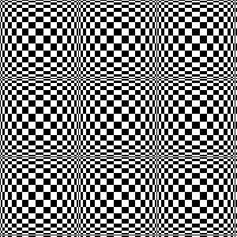
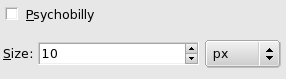

Figure 16.261.
Example for the Checkerboard filter
Filter “Checkerboard” applied

Psychobilly “Checkerboard”
This filter creates a checkerboard pattern replacing the current layer
content. Colors used for pattern are current Fore- and Back ground
colors of toolbox.
11.12.2.
Starting filter
You can find this filter in the image menu through
Filters → Render → Pattern → Checkerboard
11.12.3.
Options
Figure 16.262.
“Checkerboard” filter options

Psychobilly
This option gives an eiderdown look to the Checkerboard.
Size
With this option, you can set checkerboard square size, in
pixels, or in your chosen unit by using the drop-down list.